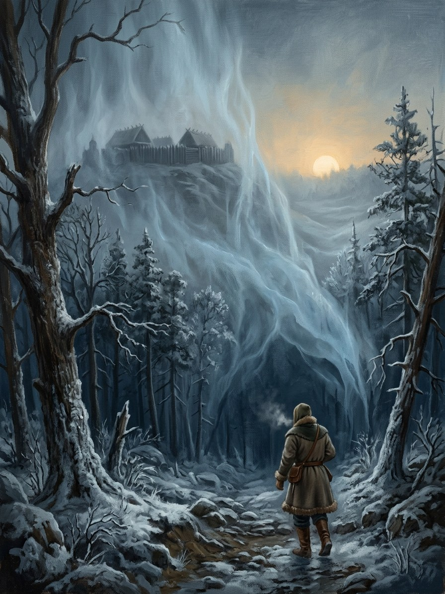

Baltoji Tyla (White Silence)¶
Nature¶
Egregore (Cosmology §3.3): Baltoji Tyla. It is fed by purchased purity: baptisms bought or sold for land and crowns. It gathers wherever a baptism is being bought, which is why it settles on Jogaila’s Vilnius in 1382 (he is already pricing a crown) and on Krėva, where the 1385 union will be signed. Jadvyga at her best is its victim, not its servant.
Baltoji Tyla (White Silence)

Baltoji Tyla (White Silence) · force¶
Tipas |
galia |
Origin |
Egregoras (maitinamas institucijų) |
Pastaba |
The chilling stasis of winter, numbness, frost, and spiritual detachment. |
Wants¶
The Order’s absolute dominion; the world „bleached“ of pagan colour. Quiet and stillness as a state of grace.
Takes (its price)¶
Fearlessness, holy calm, healing with frost, and the „Crusader’s Winter“ of early snows that starve defenders. The healer gives up warmth and sound dies around them (the frost-touch).
Signs & manifestations¶
Frost flowers on blades and windows that grow slowly „like someone writing“; sound dying; lilies on frozen fields; breath white in summer. Krėva first (Book I ch. 14, November 1382), and then at the 1385 union, where frost ferns grow on the glass while the Latin is read and the quill makes no sound (ch. 28b). Frost around the shoes of a boyar family given vaidilutės in marriage (Book II ch. 3); on Jadvyga’s hands and her child’s lips (ch. 21); on Jogaila’s brows when he kisses her hand.
Vessels, servants, claims¶
Vessel: Jadvyga (1386–99), a „saint“ only because it uses her as a conduit; at her death her body does not decay. Fed by: Poland and the Algirdaičiai (from 1382). Servants: the bebalsiai („the voiceless“, hollowed by bought baptisms).
Weaknesses¶
It smothers Wind (no sound, no far-speech) and freezes Water workings. Warmth beats it: frost melts when a man weeps (Book IV ch. 14). A žaltys tells Jadvyga that „the Silence will freeze your heart while it saves your soul“ (Book II ch. 21).
Arc across the books¶
I: Krėva (ch. 14), the 1385 union (ch. 28b). II: the church at Vilnius (ch. 3), Jadvyga’s frost (ch. 21). III: Jogaila’s frozen hand on the stone (ch. 3). IV: frost in Jogaila’s rooms (ch. 19). V: after the Last Flame goes out, an unnamed cold fills Trakai (ch. 4). It is the last of the four to become pure institution.
Ryšiai
Counters: Vanduo (Water) · Vėjas (Wind)
Fed by: Algirdaičiai (Algirdas’s line) (1382–…) · Kingdom of Poland (Lesser Poland lords) — Fed by purchased baptisms wherever they occur (incl. Jogaila’s).
Patron of: White Silence’s frost-touch
Servants: Bebalsiai (the Voiceless) — Hollowed by bought baptisms.
Vessels: Jadvyga (Jadwiga) (1386–1399)
Nature Egregore (Layer II). Jadwiga at her best is its victim, not its servant
Born of Purchased purity: baptisms bought or sold for land and crowns
Vessels Jadvyga (1386-99), a saint only because it uses her as a conduit. Fed by Poland and the Algirdaičiai. Servants: the bebalsiai
Wants The Order's absolute dominion; the world bleached of pagan colour. Quiet and stillness as a state of grace
Takes Warmth and sound. It grants fearlessness, holy calm, healing with frost and the Crusader's Winter of early snows
Signs Frost flowers on blades and windows that grow slowly like someone writing; sound dying; lilies on frozen fields; breath white in summer
Weaknesses It smothers Wind and freezes Water, but warmth beats it: frost melts when a man weeps. A living flame counters it
Gathers at a price. Wherever a baptism is being bought: Jogaila's Vilnius in 1382 (he is already pricing a crown) and Krėva, where the 1385 union is signed.
Hollowing. Its victims are the bebalsiai, who lose voice, shadow and warmth.
Where crowns are priced. Vilnius, Krėva, Kraków. Strongest in winter and wherever a bought baptism is read aloud.
After the flame. An unnamed cold fills Trakai once the Last Flame goes out (Book V ch. 4).
Book I. Krėva first, as frost in November 1382 (ch. 14); at the 1385 union frost ferns grow on the glass and the quill makes no sound (ch. 28b).
Book II. The church at Vilnius (ch. 3); Jadvyga's frost on her hands and her child's lips, July 1399 (ch. 21).
Book III. Jogaila's frozen hand on the stone (ch. 3).
Book IV. Frost in Jogaila's rooms (ch. 19); frost melts when a man weeps (ch. 14).
Book V. The unnamed cold fills Trakai (ch. 4). It is the last of the four to become pure institution.
Sąsajos¶
graph LR
algirdaiciai["Algirdaičiai (Algirdas's line)"]
bebalsiai["Bebalsiai (the Voiceless)"]
el_water["Vanduo (Water)"]
el_wind["Vėjas (Wind)"]
jadvyga["Jadvyga (Jadwiga)"]
poland["Kingdom of Poland (Lesser Poland lords)"]
white_silence["Baltoji Tyla (White Silence)"]
white_touch["White Silence's frost-touch"]
white_silence -->|Fed by| poland
white_silence -->|Fed by| algirdaiciai
white_silence -->|Patron of| white_touch
white_silence -->|Counters| el_wind
white_silence -->|Counters| el_water
jadvyga -->|Vessel of| white_silence
bebalsiai -->|Servant of| white_silence
style white_silence stroke-width:3px